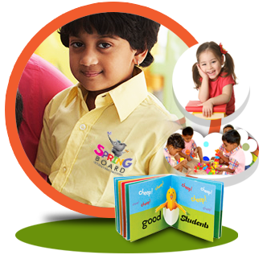

Welcome to JashyaBoard
Jashya Board is a vibrant early childhood centre that serves children between 1 1/2 years to 5 years of age. We provide high quality care combined with a strong educational foundation and a focus on environmental consciousness.
Each child’s potential will be nurtured through our vibrant learning environment which combines play, carefully designed lesson plans, and thoughtful interactions. Children will build a strong foundation for their future and the future of our world during their time with us.
Your child is valued as an individual and acquires lifelong skills that lay the foundation for future schooling. We believe in the unique way each child views the world and are committed to their development by offering engaging experiences.
Our Preschool Program introduces children to more structure and teacher-guided activities, while still balancing play and exploration. As children turn three, they become more aware of their role in the world around them and have increased social interactions with their peers and adults. Our talented teachers use open-ended activities to begin to help children explore science, social studies, math, and early literacy skills in a discovery-based way. Each day brings a new adventure as our pre-schoolers learn to play cooperatively and are exposed to a variety of activities!